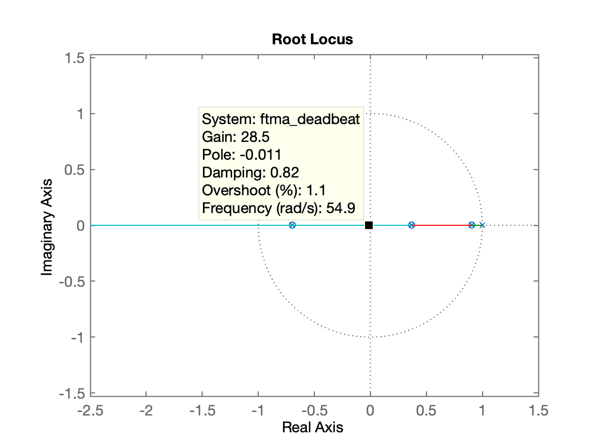
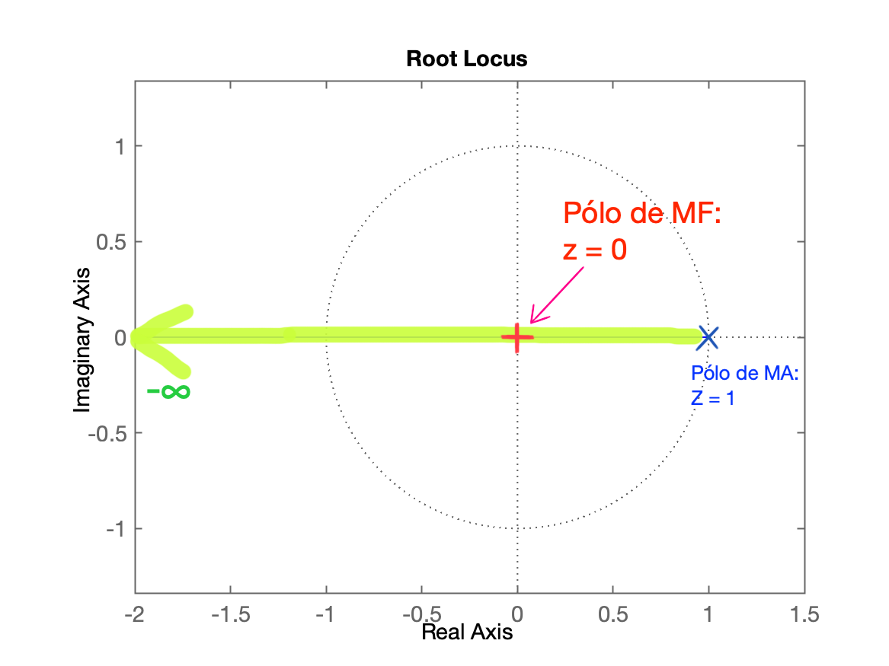
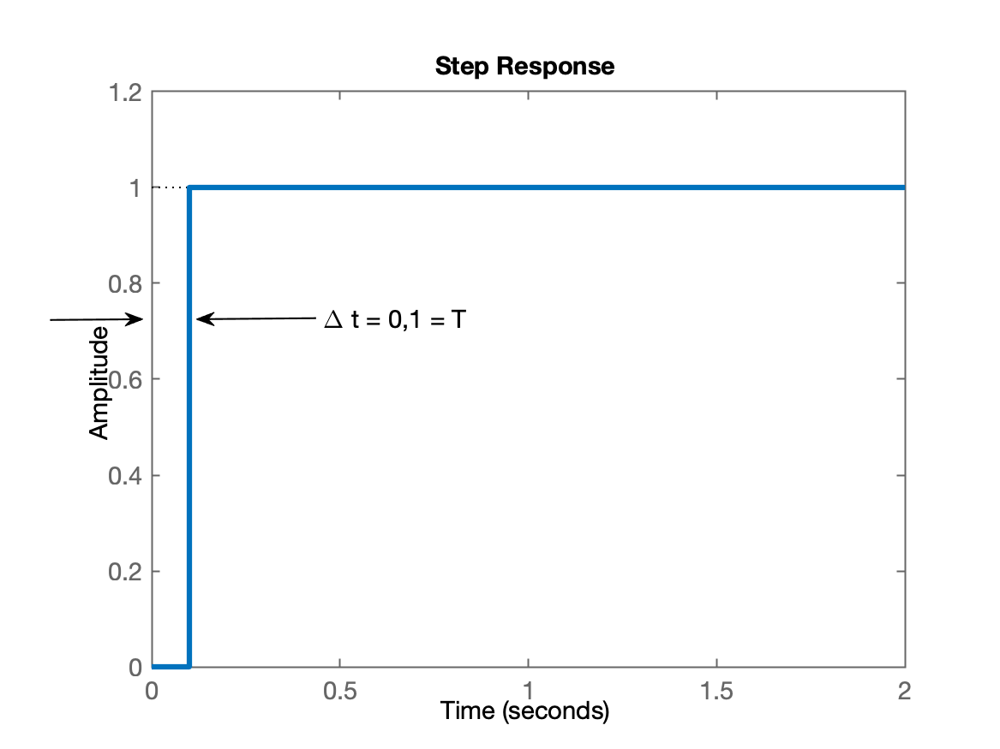
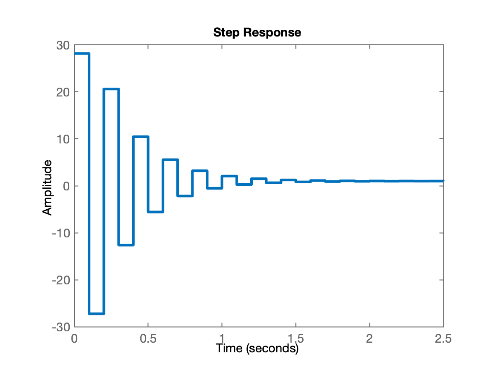
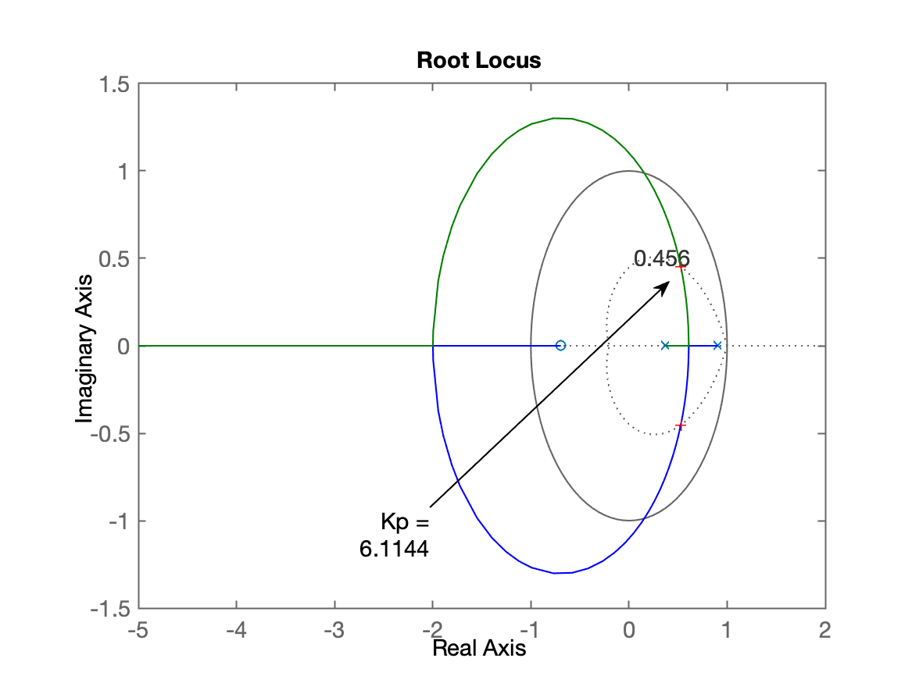
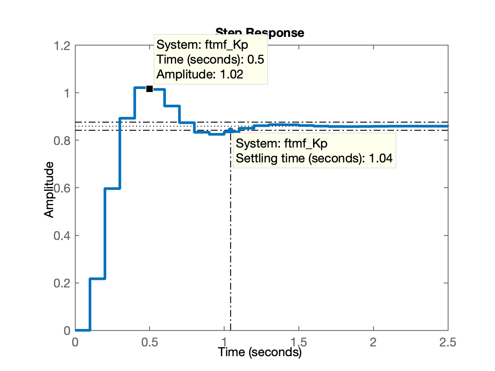
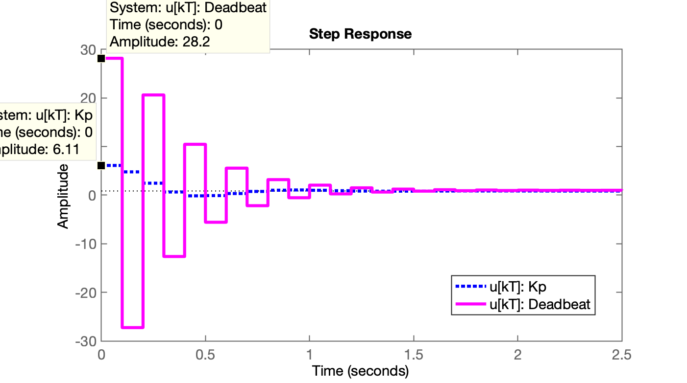

Seja uma planta definida como:
que é amostrada à segundos.
O projeto de um controlador do tipo dead-beat para esta planta fica:
xxxxxxxxxx>> G=tf(10, poly([-1 -10]));>> zpk(G) 10 ------------ (s+10) (s+1) >> % Amostrando a planta:>> T=0.1;>> BoG=c2d(G,T);>> zpk(BoG) % verificando 0.035501 (z+0.6945) --------------------- (z-0.9048) (z-0.3679)Sample time: 0.1 secondsDiscrete-time zero/pole/gain model.>> polos_BoG=pole(BoG) % isolando os pólos de BoG(z)polos_BoG = 0.9048 0.3679>> zeros_BoG=zero(BoG) % isolando os zeros de BoG(z)zeros_BoG = -0.6945>> % Montando a equação do Deadbeat para esta planta:>> C_deadbeat=tf( poly(polos_BoG), poly(zeros_BoG) ,T);>> zpk(C_deadbeat) % verificando (z-0.9048) (z-0.3679) --------------------- (z+0.6945)Sample time: 0.1 secondsDiscrete-time zero/pole/gain model.>> % Propositalmente até este ponto apenas cancelamos pólos e zeros>> % mas grau do numerador > grau denominador ==> sitema irealizável>> % Necessitamos aumentar grau do denominador ==> incluindo integrador>> C_deadbeat=tf( poly(polos_BoG), poly([zeros_BoG 1]) ,T);>> zpk(C_deadbeat) (z-0.9048) (z-0.3679) --------------------- (z-1) (z+0.6945)Sample time: 0.1 secondsDiscrete-time zero/pole/gain model.>> % Calculando FTMA(z)>> ftma_deadbeat=C_deadbeat*BoG;>> zpk(ftma_deadbeat) 0.035501 (z+0.6945) (z-0.9048) (z-0.3679) ----------------------------------------- (z+0.6945) (z-0.9048) (z-1) (z-0.3679)Sample time: 0.1 secondsDiscrete-time zero/pole/gain model.>> % Usando função "minreal()" do MATLAB para forçar>> % cancelamento de pólos e zeros>> ftma_deadbeat2=minreal(ftma_deadbeat, 1E-4);>> zpk(ftma_deadbeat2) 0.035501 -------- (z-1)Sample time: 0.1 secondsDiscrete-time zero/pole/gain model.>> % Confirmando o RL final com o controlador>> figure; rlocus(ftma_deadbeat)RL para o Controlador Deadbeat:
| RL do Controlador Deadbeat | RL desejado (implicações) |
|---|---|
|  |  |
| Obs.: Note os cancelamentos pólos/zeros ocorridos. | Posição do ganho. |
Pela teoria vista, é desejado que:
Então definimos o ganho do controlador para garantir isto:
xxxxxxxxxx>> % Definindo ganho do controlador>> K_deadbeat=1/0.035501K_deadbeat = 28.1682>> % fechando a malha e confirmando resposta rápida>> ftmf_deadbeat=feedback(K_deadbeat*ftma_deadbeat, 1);>> figure; step(ftmf_deadbeat)Resposta ao degrau obtida para controlador deadbeat:

Ou seja, a planta à partir de (segunda amostra) já estava em regime permamente.
xxxxxxxxxx>> % Note como ficou a FTMF(z) com este controlador>> zpk(ftmf_deadbeat) (z+0.6945) (z-0.9048) (z-0.3679)--------------------------------------------- (z+0.6945) (z-0.9048) (z-0.3679) (z-1.17e-05)Sample time: 0.1 secondsDiscrete-time zero/pole/gain model.>> % ou usando a função "minreal()" do Matlab para enfatizar>> % os cancelamentos pólos/zeros que ocorreram>> ftmf_deadbeat2=minreal(ftmf_deadbeat,1E-4);>> zpk(ftmf_deadbeat2) 0.99999------------ (z-1.17e-05)Sample time: 0.1 secondsDiscrete-time zero/pole/gain model.>>Note que praticamente obtivemos o tipo de equação desejada:
Apesar da planta entrar em regime permanete (e sem erro) à partir da segunda amostra (), não observamos ainda as amplitudes geradas para esta ação de controle.
Verificando as amplitudades geradas por esta ação de controle:
xxxxxxxxxx>> aux_deadbeat=K_deadbeat*C_deadbeat/(1+K_deadbeat*ftma_deadbeat);>> figure; step(aux_deadbeat)
Não temos como comparar estas amplitudes com as que seriam geradas por um controlador proporcional. Então segue rápido projeto de Controlador Proporcional para esta planta:
xxxxxxxxxx>> OS=20; % supondo overshoot máximo de 20%>> zeta = (-log(OS/100))/(sqrt(pi^2 + (log(OS/100)^2)));>> hold on>> zgrid(zeta,0)>> [Kp, polosMF]=rlocfind(BoG)Select a point in the graphics windowselected_point = 0.5361 + 0.4558iKp = 6.1144polosMF = 0.5278 + 0.4528i 0.5278 - 0.4528i>> ftmf_Kp=feedback(Kp*BoG, 1);>> figure; step(ftmf_Kp)| RL p/Controlador Proporcional | Resposta ao Degrau Controlador Proporcioanl |
|---|---|
|  |  |
Voltando à comparação das amplitudes de ações de controle geradas por diferentes controladores...
xxxxxxxxxx>> % Calculando amplitude ação do Controlar Proporcional>> aux_Kp=Kp/(1+Kp*BoG);>> % Comparando as amplitudades das ações de controle>> figure; step(aux_Kp, aux_deadbeat)Gráfico das amplitudes das ações controle para Controlador Proporcional e Deabeat:

Repare que o controlador deadbeat gera expressivas ações de controle, quase superiores às de um controlador proporcional:
xxxxxxxxxx>> 28.2/6.11ans = 4.6154>>Fim